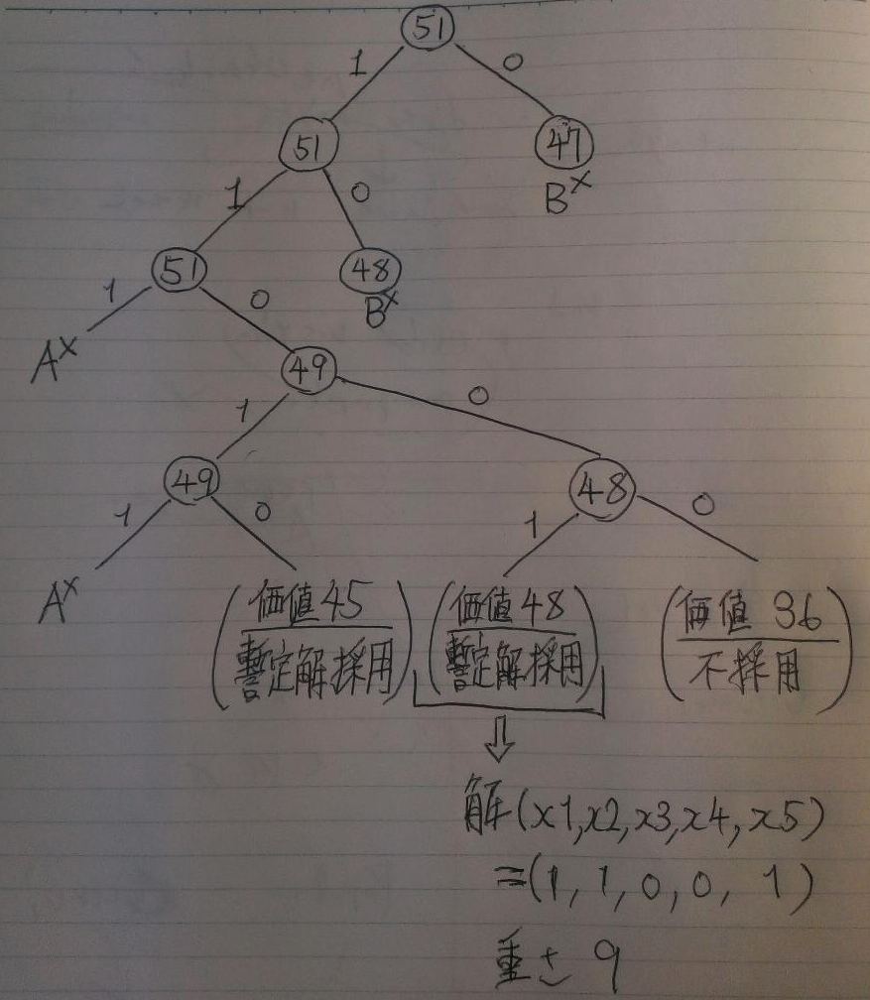

考え得る全ての経路を”分枝操作”によって場合分けを行い”部分問題”に分解し、その全列挙木から探索過程で最も優れた解を”暫定解”とする。探索途中で暫定解を超えた場合にはそれ以上の探索は暫定解より優れた解を得られないことが保障されるので”限定操作”を行い、限定操作した枝より先の探索を打ち切ることが出来る。また、現時点で想定されるこれ以上優れた解は無いと言えるような値のことを”上界値”とし、これが暫定解を超えた場合も同様に限定操作によって枝刈りが可能。ある解が求められたとしても、その解を採用するには制約条件内である必要があるが、そのような解を”実行可能解”と呼ぶ。
| 品物 | x1 | x2 | x3 | x4 | x5 |
| 価値 | 14 | 22 | 30 | 9 | 12 |
| 重さ | 2 | 4 | 6 | 2 | 3 |
最大積載量:9
それぞれの状態での上界をノード内に表記し、左に分枝する方から優先的に探索を行う。
また、Axで暫定重量が制限を超えた場合の限定操作を表し、Bxで探索過程で暫定解を下回った場合の限定操作を表すとすると、

となる。
まず(x1,x2,x3,x4,x5)=(1,1,0,1,0)
の場合の暫定解 45 を採用する。
次に(x1,x2,x3,x4,x5)=(1,1,0,0,1) の解 48 は暫定解 45 よりも優れているので、暫定解を48に更新する。
その分岐を０とすると価値は36になり、暫定解を下回るので不採用とする。
x2が０、x1が０の場合は上界が暫定解以下なので、そこで限定操作を行う。これより解は
(x1,x2,x3,x4,x5)=(1,1,0,0,1)
価値：４８ 重さ：９
wは k-a_w >= 0 を満たすような全ての値とすると、
F(j,k) = max{ F(j-1,k) , F(j-1,k - a_w) + c_w }
| j＼k | 0 | 1 | 2 | 3 | 4 | 5 | 6 | 7 | 8 | 9 |
| 0 | 0 | 0 | 0 | 0 | 0 | 0 | 0 | 0 | 0 | 0 |
| 1 | 0 | 0 | 14 | 14 | 14 | 14 | 14 | 14 | 14 | 14 |
| 2 | 0 | 0 | 14 | 14 | 22 | 22 | 36 | 36 | 36 | 36 |
| 3 | 0 | 0 | 14 | 14 | 22 | 22 | 36 | 36 | 44 | 44 |
| 4 | 0 | 0 | 14 | 14 | 23 | 23 | 36 | 36 | 45 | 45 |
| 5 | 0 | 0 | 14 | 14 | 23 | 26 | 36 | 36 | 48 | 48 |
(M+m)/(2D + M/B2 + m/B2)
(m/B2) < (M/B2) <<<< D より、
≒ (M+m)/2D
紛失される確率：ρ
送信成功確率：(1-ρ)
・送信成功
(M/B2 + D) + (m/B2 + D) = 2D + (M+m)/B2
・送信失敗
(M/B2 + D) + 3D + (m/B2 + D) = 4D + (M+m)/B2
・必要な時間の平均値
ρ{ 2D + (M+m)/B2 } + (ρ-1){ 4D + (M+m)/B2 }
= ρ{ 6D + 2(M+m)/B2 } – { 4D + (M+m)/B2 }
一定時間以上経ってもACKパケットが受信されない場合は再送信する。
同一ACKパケットを複数回受信した場合は選択再送により、既に送ってしまった未送達のパケット以外を無駄にしない。
図省略
・コネクションレス型通信
ACKが送信先から返送される時間をカット出来るので、
(D + M/B2)の時間でMbyteのパケットを送信することが可能。
しかしながら情報が確実に送信先に届くことが保証されない信頼性の無い通信であるため、ある程度情報が欠けているか、誤っていても問題ないようなデータを送信する場合である必要がある。
・帯域幅の増強
Dが小さくなると、次はホスト１～２の通信経路のB2の狭い帯域幅がボトルネックになる。いくらB1、B3の帯域幅を広げようとも、B1～B3の中で最も狭い帯域幅に制限されるので、B1～B3の中で最も狭い帯域幅を出来るだけ大きくすること出来れば、通信速度の向上が望める。
現状はB2<B3 <B1であるが、例えばB2をB3の帯域幅と同等に改善することが出来れば、
2D + (M+m)/B3 に短縮可能。
ただし増強のコストが掛かる。
・１パケットの大きさを増やす
１パケットを２倍にして２Mとしたとすれば、通信回数は単純に半分になるため、片方向遅延の影響を小さく出来る。
例えば通常２パケット分必要なデータと、１パケットにまとめたものと比較してみる。
・２パケット : A
D + 2M/B2 + D + m/B2 = 2D + (2M+m)/B2
・１パケット : B
2D + (M+m)/B2
・A – B
M/B2
分だけ通信時間を短縮出来ているので、Dが大きい場合は非常に有効であることが分かる。
但し紛失率ρが大きい場合のペナルティも比例して大きくなるので、成功率がある程度高い場合にのみ効果を発揮する。